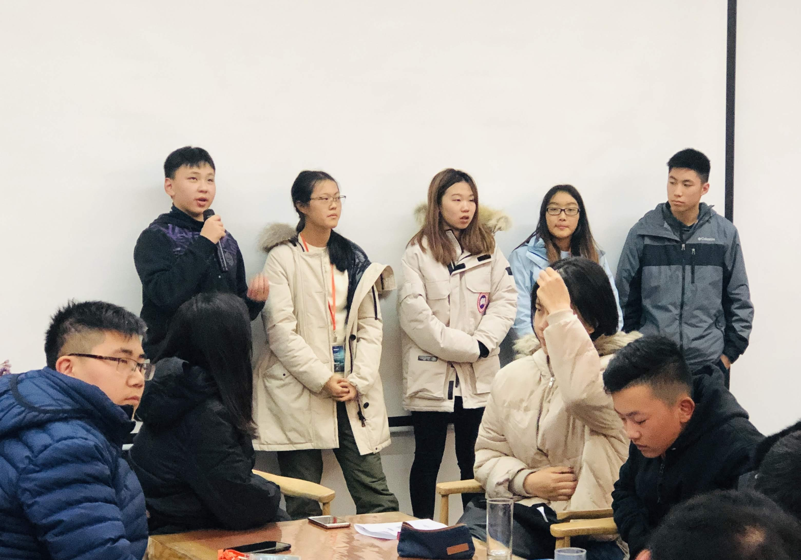
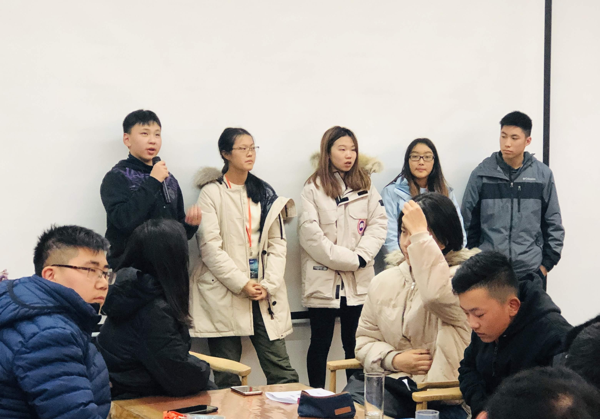

Michelle Wang
Action and learning over words. Goal oriented. From volunteering to working, actions are what drives my motivation. I have taught kids who are unable to afford a proper education. I have partnered with people I highly respect. What I believe, after collaborating with so many different people, is that respect is the first step to building understanding between my coworkers and I. I am driven, hardworking, and will rise to any challenge because there is only a challenge when there is trust.
- I'm able to proficiently manage and handle spreadsheets, like using it for calculations or using it to curate information
- In my prior experience with finances, I have learnt how to reach out to and contact relevant manufacturers and printers, e.g. Vograce
- I am able to create budget sheets to estimate the production cost of merchandise and advise other moderators about finance-related matters
- I believe that I am a team person, and can communicate well with my fellow moderators, as well as contributors - I am almost always online, and willing to assist moderators if they are in need of an extra hand
- I can work well under pressure and make sure to be efficient with my tasks so as to not delay the schedule, and for the convenience of the team - I can manage time well and obey task breakdowns as required of me
- I am able to beta read writing and judge it fairly without personal bias (e.g. by clarity, flow, grammar, overall grasp on language)
- I am fluent in conversational Chinese, and will be able to speak to/communicate in it wherever necessary
Experience
Grant Research Intern
• Researched over 150 potential funders through Foundation Directory Online and individual foundation websites
•Recorded details about spending locations, education spending, foundation focus, giving details, and application logistics in a detailed Excel sheet
•Honed communication skills while working as part of a team in a nonprofit organization
•Edited and created a new section to the previous intern’s best practices document to assist future grant research interns
Tutor
• Tutored Children going into 4th grade
• Made lesson plans
• Developed leadership skills
Participant
• Developed Leadership skills
• Communicated with people in need
• Created educational content to help promote student education
• Interviewed villagers
Education
University of California Riverside
Portfolio


